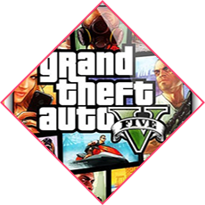
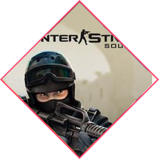

Downloads
-

Grand Theft Auto 5
Grand Theft Auto 5 is a 2013 action-adventure game developed by Rockstar North and published by Rockstar Games. It is the first main entry in the Grand Theft Auto series since 2008's Grand Theft Auto IV ...
Download -
Mafia III
Mafia III is an action-adventure video game developed by Hangar 13 and published by 2K Games. It was released in October 2016 for PlayStation 4, Xbox One, and Microsoft Windows, in May for mac ...
Download -

Counter Strike: Source
Counter-Strike: Source is a first-person shooter video game developed by Valve and Turtle Rock Studios. Released in November 2004 for Windows, it is a remake of Counter-Strike (2000) using the Source ...
Download